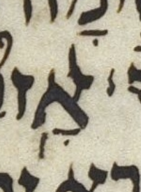
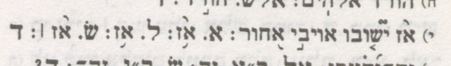

This page lists the 15 poetic (Three Books) WLC 4.22 verses the PLY accent grammar cannot parse cleanly (13 missing-silluq, 2 NO_PARSE). Use the filter below to narrow the list.
Each verse falls into one of two documented kinds:
Each verse shows its pointed-Hebrew text (the verse-final word highlighted for missing-silluq cases) and — for missing-silluq verses — a SAT focus-word table comparing the WLC focus word against its UXLC and MAM-simple readings. The per-verse summary is mechanically auto-derived — but from a word-by-word alignment of the two verses, not from the conjunctive-stripped skeletons above, so a divider that merely sits on a different word is reported as such rather than as a phantom substitution. It is labelled tentative — not a hand-vetted attribution. See doc/PLAN-poetic-accent-grammar.md for the full taxonomy.
🔗 Kind: Missing silluq (ERROR-leaf recovery).
Auto-derived summary (tentative): Word-aligned against MAM-simple, on אדם, WLC reads no divider (a conjunctive) where MAM reads silluq.
מ֤ה רב־ טובך֮ אשר־ צפ֪נת ליר֫א֥יך פ֭עלת לחס֣ים ב֑ך נ֝֗גד בנ֣י אדם׃
מ֤ה רב־ טובך֮ אשר־ צפ֪נת ליר֫א֥יך פ֭עלת לחס֣ים ב֑ך נ֝֗גד בנ֣י אדם׃
| אדם׃ | ]1 | sof_pasuq | wlc_focus |
| אדֽם׃ | silluq-sof_pasuq | diff_wlc_mam |
| 0 | slqc | |||||
| 1 | oleh_weyoredc | slqc | ||||
| 2 | tsinnorp | oleh_weyoredp | atnc | slqc | ||
| 3 | dexip | atnp | rev_mugrashp | slqp | ||
| mah tsinnor | galgal oleh we-yored | dexi | mun atn | rev mugrash | ERROR | |
🔗 Kind: Missing silluq (ERROR-leaf recovery).
Auto-derived summary (tentative): Word-aligned against MAM-simple, on רמיה, WLC reads no divider (a conjunctive) where MAM reads silluq.
א֥שרי אד֗ם ל֤א יחש֬ב יהו֣ה ל֣ו עו֑ן וא֖ין ברוח֣ו רמיה׃
א֥שרי אד֗ם ל֤א יחש֬ב יהו֣ה ל֣ו עו֑ן וא֖ין ברוח֣ו רמיה׃
| רמיה׃ | ]1 | sof_pasuq | wlc_focus |
| רמיֽה׃ | silluq-sof_pasuq | diff_wlc_mam |
| 0 | slqc | ||
| 1 | atnc | slqp | |
| 2 | rev_gadolp | atnp | |
| mer rev gadol | mah illuy mun mun atn | ERROR | |
🔗 Kind: Missing silluq (ERROR-leaf recovery).
Auto-derived summary (tentative): Word-aligned against MAM-simple, on אשריו, WLC reads no divider (a conjunctive) where MAM reads silluq.
תור֣ת אלה֣יו בלב֑ו ל֖א תמע֣ד אשריו׃
תור֣ת אלה֣יו בלב֑ו ל֖א תמע֣ד אשריו׃
| אשריו׃ | ]c | sof_pasuq | wlc_focus |
| אשרֽיו׃ | silluq-sof_pasuq | diff_wlc_mam |
| 0 | slqc | |
| 1 | atnp | slqp |
| mun mun atn | ERROR | |
🔗 Kind: Missing silluq (ERROR-leaf recovery).
Auto-derived summary (tentative): Word-aligned against MAM-simple, on להמיתו, WLC reads no divider (a conjunctive) where MAM reads silluq.
צופ֣ה ר֭שע לצד֑יק ו֝מבק֗ש להמיתו׃
צופ֣ה ר֭שע לצד֑יק ו֝מבק֗ש להמיתו׃
| להמיתו׃ | ]1 | sof_pasuq | wlc_focus |
| להמיתֽו׃ | silluq-sof_pasuq | diff_wlc_mam |
| 0 | slqc | |||
| 1 | atnc | slqc | ||
| 2 | dexip | atnp | rev_mugrashp | slqp |
| mun dexi | atn | rev mugrash | ERROR | |
🔗 Kind: NO_PARSE (L anomaly — no valid tree exists). Summary: On the verse-initial word אָ֥֨ז, WLC transcribes TWO accents on the one alef — a merkha (below) and a qadma/azla (above). (This transcription is plausible but uncertain: see the LC image and its discussion below.) MAM carries the azla alone; according to Breuer, the Aleppo Codex likewise has azla and Sassoon 1053 has merkha. The checker fuses the pair into one order-less merkha!azla bang-pair and flags the verse as a lexical anomaly: only a few accent pairs (revia + geresh-muqdam, deḥi + munaḥ, oleh + yored) may legitimately share one letter, and merkha + azla is not among them.
Auto-derived summary (tentative): WLC and MAM-simple agree on the disjunctive skeleton, yet the verse does not parse — so the anomaly is below the disjunctive skeleton (a conjunctive or lexical matter), not a disjunctive divergence. This skeleton-level oracle does not look beneath the skeleton, so it cannot say whether WLC and MAM diverge there (they may well: e.g. Ps 56:10's extra merkha).
א֥֨ז י֘ש֤ובו אויב֣י א֭חור בי֣ום אקר֑א זה־ י֝ד֗עתי כי־ אלה֥ים לֽי׃
א֥֨ז י֘ש֤ובו אויב֣י א֭חור בי֣ום אקר֑א זה־ י֝ד֗עתי כי־ אלה֥ים לֽי׃
| 0 | no_parse | |||||||||
| MERKHA_AZLA ← stalled here | MAHAPAKH_METSUNNAR | MUNAX | DEXI | MUNAX | ATNAX | REVIA_MUGRASH | MERKHA | SILLUQ | ERROR | |
Across the witnesses the two marks split cleanly one-each: MAM has azla; according to Breuer, the Aleppo Codex likewise has azla and Sassoon 1053 has merkha. The LC's carrying of BOTH, on a single letter, could be an attempt to preserve two single-accent traditions — recording the two options rather than choosing.
The upper mark (transcribed as the qadma/azla) is in any case oddly placed and oddly shaped; it could as easily be a misshapen part of the alef as a deliberate accent — so even the azla half of the supposed pair is uncertain, much as the Job 31:15 geresh-muqdam is.
The checker represents the cluster faithfully as one merkha!azla bang-pair but does NOT bless it grammatically (it is not a licit servus), so the verse is a NO_PARSE oddball rather than a silently-clean parse. Each of the four interpretations — merkha alone, azla alone, and the two orderings as a sequence — does parse, but only weakly: our poetic conjunctive grammar is permissive, so it cannot yet make “both options are well-formed” a strong claim. Strengthening that is a noted, separate direction.


🔗 Kind: Missing silluq (ERROR-leaf recovery).
Auto-derived summary (tentative): Word-aligned against MAM-simple, WLC segments this stretch as ירוצון where MAM has ירצון; on וראה, WLC reads no divider (a conjunctive) where MAM reads silluq.
בלי־ ע֭ון ירוצ֣ון ויכונ֑נו ע֖ורה לקראת֣י וראה׃
בלי־ ע֭ון ירוצ֣ון ויכונ֑נו ע֖ורה לקראת֣י וראה׃
| וראה׃ | ]1 | sof_pasuq | wlc_focus |
| וראֽה׃ | silluq-sof_pasuq | diff_wlc_mam |
| 0 | slqc | ||
| 1 | atnc | slqp | |
| 2 | dexip | atnp | |
| dexi | mun atn | ERROR | |
🔗 Kind: Missing silluq (ERROR-leaf recovery).
Auto-derived summary (tentative): Word-aligned against MAM-simple, on אדם, WLC reads no divider (a conjunctive) where MAM reads silluq.
הבה־ ל֣נו עזר֣ת מצ֑ר ו֝ש֗וא תשוע֥ת אדם׃
הבה־ ל֣נו עזר֣ת מצ֑ר ו֝ש֗וא תשוע֥ת אדם׃
| אדם׃ | ]1 | sof_pasuq | wlc_focus |
| אדֽם׃ | silluq-sof_pasuq | diff_wlc_mam |
| 0 | slqc | ||
| 1 | atnp | slqc | |
| 2 | rev_mugrashp | slqp | |
| mun mun atn | rev mugrash | ERROR | |
🔗 Kind: Missing silluq (ERROR-leaf recovery).
Auto-derived summary (tentative): Word-aligned against MAM-simple, on וחומץ, WLC reads no divider (a conjunctive) where MAM reads silluq.
אלה֗י פ֭לטני מי֣ד רש֑ע מכ֖ף מעו֣ל וחומץ׃
אלה֗י פ֭לטני מי֣ד רש֑ע מכ֖ף מעו֣ל וחומץ׃
| וחומץ׃ | ]1 | sof_pasuq | wlc_focus |
| וחומֽץ׃ | silluq-sof_pasuq | diff_wlc_mam |
| 0 | slqc | |||
| 1 | atnc | slqp | ||
| 2 | rev_gadolp | atnc | ||
| 3 | dexip | atnp | ||
| rev gadol | dexi | mun atn | ERROR | |
🔗 Kind: Missing silluq (ERROR-leaf recovery).
Auto-derived summary (tentative): Word-aligned against MAM-simple, on יצרתם, WLC reads no divider (a conjunctive) where MAM reads silluq.
את֣ה ה֭צבת כל־ גבול֣ות א֑רץ ק֥יץ ו֝ח֗רף את֥ה יצרתם׃
את֣ה ה֭צבת כל־ גבול֣ות א֑רץ ק֥יץ ו֝ח֗רף את֥ה יצרתם׃
| יצרתם׃ | ]1 | sof_pasuq | wlc_focus |
| יצרתֽם׃ | silluq-sof_pasuq | diff_wlc_mam |
| 0 | slqc | |||
| 1 | atnc | slqc | ||
| 2 | dexip | atnp | rev_mugrashp | slqp |
| mun dexi | mun atn | mer rev mugrash | ERROR | |
🔗 Kind: Missing silluq (ERROR-leaf recovery).
Auto-derived summary (tentative): Word-aligned against MAM-simple, on התוו, WLC reads no divider (a conjunctive) where MAM reads silluq.
ויש֣ובו וינס֣ו א֑ל וקד֖וש ישרא֣ל התוו׃
ויש֣ובו וינס֣ו א֑ל וקד֖וש ישרא֣ל התוו׃
| התוו׃ | ]1 | sof_pasuq | wlc_focus |
| התוֽו׃ | silluq-sof_pasuq | diff_wlc_mam |
| 0 | slqc | |
| 1 | atnp | slqp |
| mun mun atn | ERROR | |
🔗 Kind: Missing silluq (ERROR-leaf recovery).
Auto-derived summary (tentative): Word-aligned against MAM-simple, on אלים, WLC reads no divider (a conjunctive) where MAM reads silluq.
כ֤י מ֣י ב֭שחק יער֣ך ליהו֑ה ידמ֥ה ל֝יהו֗ה בבנ֥י אלים׃
כ֤י מ֣י ב֭שחק יער֣ך ליהו֑ה ידמ֥ה ל֝יהו֗ה בבנ֥י אלים׃
| אלים׃ | ]1 | sof_pasuq | wlc_focus |
| אלֽים׃ | silluq-sof_pasuq | diff_wlc_mam |
| 0 | slqc | |||
| 1 | atnc | slqc | ||
| 2 | dexip | atnp | rev_mugrashp | slqp |
| mah mun dexi | mun atn | mer rev mugrash | ERROR | |
🔗 Kind: Missing silluq (ERROR-leaf recovery).
Auto-derived summary (tentative): Word-aligned against MAM-simple, on מחתה, WLC reads no divider (a conjunctive) where MAM reads silluq.
פר֥צת כל־ גדרת֑יו ש֖מת מבצר֣יו מחתה׃
פר֥צת כל־ גדרת֑יו ש֖מת מבצר֣יו מחתה׃
| מחתה׃ | ]1 | sof_pasuq | wlc_focus |
| מחתֽה׃ | silluq-sof_pasuq | diff_wlc_mam |
| 0 | slqc | |
| 1 | atnp | slqp |
| mer atn | ERROR | |
🔗 Kind: Missing silluq (ERROR-leaf recovery).
Auto-derived summary (tentative): Word-aligned against MAM-simple, on תהום, WLC reads no divider (a conjunctive) where MAM reads silluq.
באמצ֣ו שחק֣ים ממ֑על ב֝עז֗וז עינ֥ות תהום׃
באמצ֣ו שחק֣ים ממ֑על ב֝עז֗וז עינ֥ות תהום׃
| תהום׃ | ]U | sof_pasuq | wlc_focus |
| תהֽום׃ | silluq-sof_pasuq | diff_wlc_mam |
| 0 | slqc | ||
| 1 | atnp | slqc | |
| 2 | rev_mugrashp | slqp | |
| mun mun atn | rev mugrash | ERROR | |
🔗 Kind: Missing silluq (ERROR-leaf recovery).
Auto-derived summary (tentative): Word-aligned against MAM-simple, on רבצו, WLC reads no divider (a conjunctive) where MAM reads silluq.
אל־ תאר֣ב ר֭שע לנו֣ה צד֑יק אל־ תשד֥ד רבצו׃
אל־ תאר֣ב ר֭שע לנו֣ה צד֑יק אל־ תשד֥ד רבצו׃
| רבצו׃ | ]Q]c]n | sof_pasuq | wlc_focus |
| רבצֽו׃ | silluq-sof_pasuq | diff_wlc_mam |
| 0 | slqc | ||
| 1 | atnc | slqp | |
| 2 | dexip | atnp | |
| mun dexi | mun atn | ERROR | |
🔗 Kind: NO_PARSE (L anomaly — no valid tree exists). Summary: On the verse-initial word, WLC transcribes a malformed mark — absent from MAM (and from BHL) — that the UXLC note page (linked above) flags with a transcription-uncertainty marker.
Mwd | UXLC | UXLC note page
Auto-derived summary (tentative): Word-aligned against MAM-simple, on הלא־בבטן, WLC reads revia mugrash, dexi where MAM reads dexi.
ה֝לא־ ב֭בטן עש֣ני עש֑הו ו֝יכנ֗נו בר֥חם אחֽד׃
ה֝לא־ ב֭בטן עש֣ני עש֑הו ו֝יכנ֗נו בר֥חם אחֽד׃
| 0 | no_parse | |||||||
| REVIA_MUGRASH | DEXI | MUNAX | ATNAX ← stalled here | REVIA_MUGRASH | MERKHA | SILLUQ | ERROR | |
The UXLC note for this verse describes the mark WLC transcribes here as a geresh muqdam of “a very odd shape,” a vertical straight line arising from the top front of the he, and flags it with a transcription-uncertainty “t” marker; BHL lacks the geresh muqdam entirely.
In my opinion, to transcribe this mark at all is uncharitable. To continue to transcribe it with the benefit of the high-resolution color images now available seems not just uncharitable but aggressively uncharitable, almost absurd.
{kind=link}